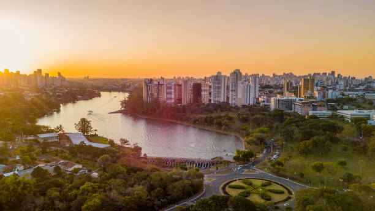

O Paraná é um estado da Região Sul do Brasil, com 11,5 milhões de habitantes e Curitiba como capital. Conhecido por suas Cataratas do Iguaçu, o estado tem uma economia diversificada, destacando-se na agricultura (soja, milho, café) e na indústria, especialmente a automobilística. O Paraná também é famoso por suas paisagens naturais e qualidade de vida.
